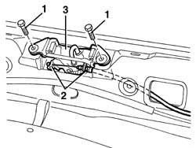
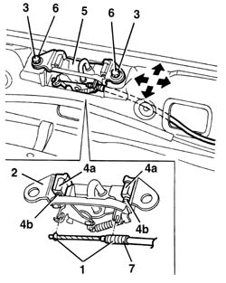

7015B18 tailgate lock striker - r+r
- Path
- Procedures > 70 FITTINGS > 7015 TAILGATE/ > 7015B tailgate locking/opening devices > 7015B18 tailgate lock striker - r+r
- Kind
- repair procedure (removal / refitting; the operation number is the code)
- Applies to
- all engines; all production periods
- Interactive page
- https://sloeber94.github.io/elrnDB-a156/en/#/3238712
Applies to: all engines; all production periods; only with equipment: Station Wagon
 Removing
Removing
 Refitting
Refitting7040B22 luggage compartment/load platform moulding - r+r
1. Unscrew the bolts
2. Disconnect the operating cable from the retainers.
3. Remove the lock striker.

Applies to: all engines; all production periods; only with equipment: Station Wagon
Refitting
RemovingCheck that the lock striker is not damaged.
1. Connect the operating cable to the retainers.
2. Position the lock striker.
3. Screw in the retaining bolts without tightening.
4. If necessary, to ensure that the shoes (4a) slide freely, lubricate them only on the slide pin (4b).
5. Adjust the position of the striker making use of the slotted openings in the bolts. Permitted adjustment movements are indicated by arrows.
6. Tighten the bolts.
7. Adjust the operating cable using the anchoring grooves on the end of the sheath.

Applies to: all engines; all production periods; only with equipment: Station Wagon
Check that the striker and catch fit together properly and are aligned when the tailgate is closed.